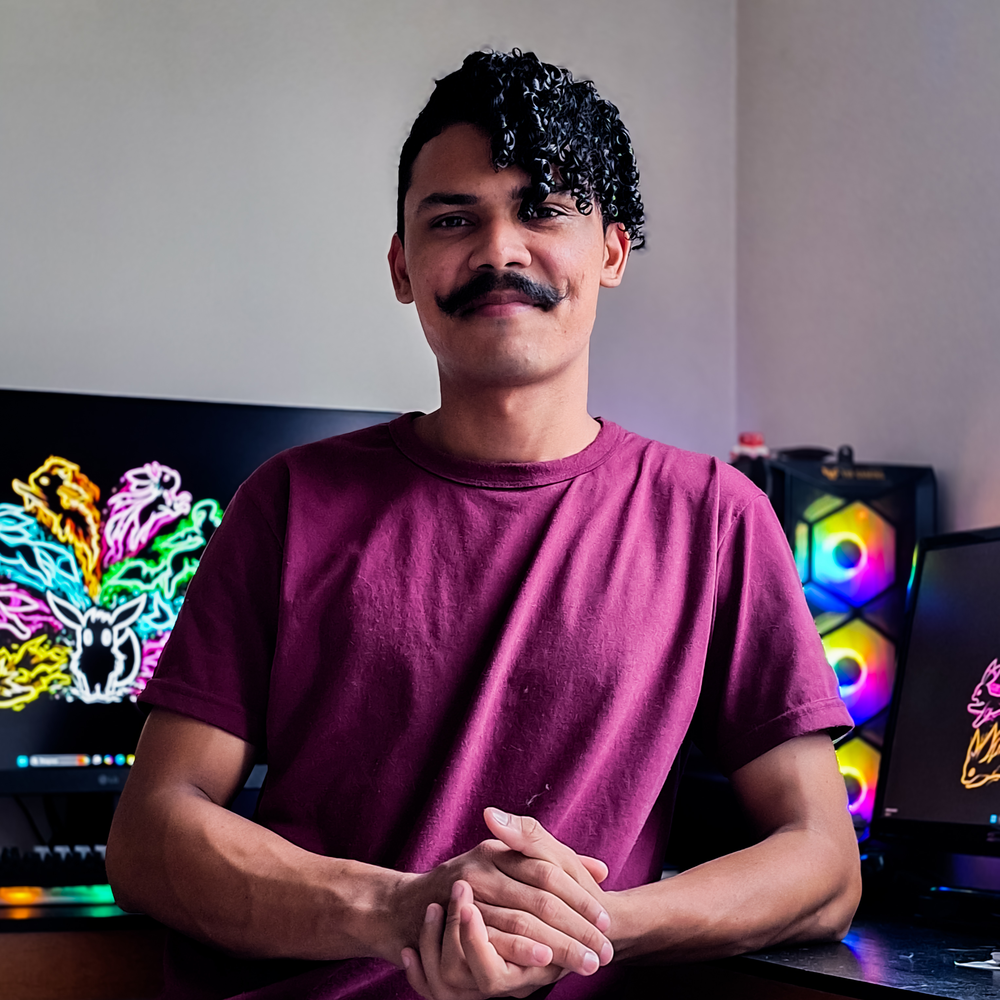

Sobre Mim
Desde novo sempre fui um entusiasta de tecnologias, sempre ligado nos últimos lançamentos do mercaddo tech, aos 17 anos minha curiosidade me levou ao meu primeiro contato com a lógica de programação com a linguagem JavaScript através da Khan Academy, apesar de ser um conhecimento básico foi um divisor de águas, graças a essa base não tive dificuldades em aprender novas linguagens.
Em 2022 atravessei o país buscando melhores oportunidades para minha família e comecei a reconstruir minha carreira, percebendo o grande investimento da região no mercado de tecnologia decidi que era minha hora de investir no que eu realmente amava.
Após fundar alicerce sólido na cidade e montar minha workstation, direcionei meus investimentos em cursos de programação, começando por Java e Springboot, onde construí minha primeira Rest API usando MySQL como banco de dados relacional, seguindo para HTML e CSS, fundamentais na construção desse portifólio e agora iniciando os estudos nos frameworks React Web e React Native.